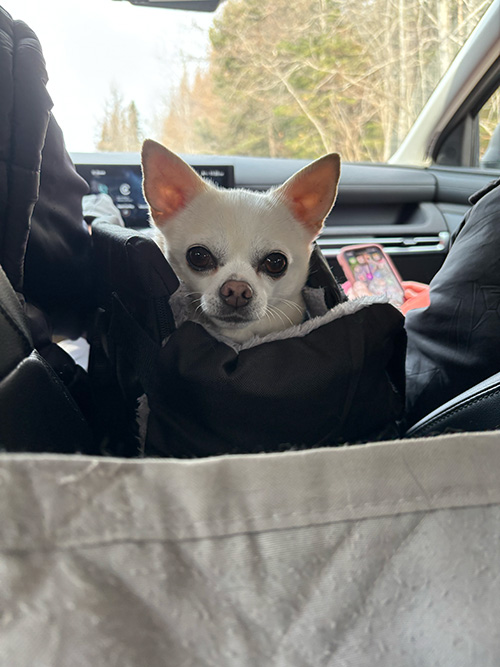

Woof Wonders
Dogs are intelligent, emotional animals that experience the world through their senses and instincts. They think in simple yet meaningful ways, often focused on companionship, play, and trust. Their feelings are deep and genuine — they can sense joy, fear, love, and even sadness in both themselves and the people around them. Through their wagging tails, curious eyes, and loyal behavior, dogs show us that their thoughts and emotions are guided by affection, loyalty, and a desire to connect.

Tulip is curled up in a cozy ball, sleeping peacefully as the world moved quietly around it.
Tulip is dozed off in its soft, knitted sweater, looking warm and content as it dreamed laying on the bed.
Tulip sat eagerly in her car seat, watching the world sped by.